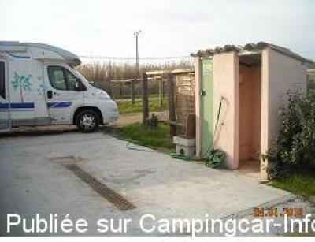
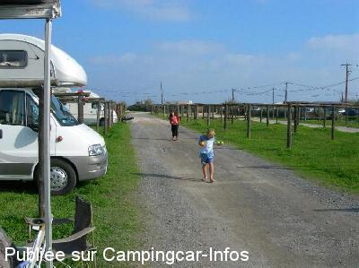

ASN = Aire de services avec stationnement nuit possible de :
RAMATUELLE
(N° 509)
Accès/adresse :
Chemin des Tamaris
Aire des Tamaris
83350 RAMATUELLE
Aire des Tamaris
83350 RAMATUELLE
Latitude : (Nord) 43.23904° Décimaux ou 43° 14′ 20′′
Longitude : (Est) 6.66171° Décimaux ou 6° 39′ 42′′
Tarif : 2014
Stationnement, vidanges : 10 à 18 €
Eau : 2 €
Électricité : 7 €
Type de borne : EURO-RELAIS
Services :


Autres informations :
Aire privée ouverte toute l'année
50 emplacements sur herbe
7 prises électriques
Tel : +33(0)675 015 091

Le 24/01/2010 par mcsoleil06

Le 01/12/2005 par michel84
de
cyrille
le 30/01/2015 :
de passage en janvier aire fermée
de passage en janvier aire fermée
de
Anatole21
le 15/03/2014 :
Aire visitée fin février. 5 camping-cars. Soleil. Très bien pour les enfants. La plage est immédiatement accessible. L'ambiance n'est sans doute pas la même au mois de juillet, mais on peut dire que pour dix euros par jours à quelques kilomètres de Saint-Trop', on n'est pas mal accueilli. Il faut toutefois compter 2 euros pour l'eau, l'électricité également est en sus.
Peu de choses à faire à part la plage, mais si vous y êtes c'est probablement que vous êtes venus pour ça!
Aire visitée fin février. 5 camping-cars. Soleil. Très bien pour les enfants. La plage est immédiatement accessible. L'ambiance n'est sans doute pas la même au mois de juillet, mais on peut dire que pour dix euros par jours à quelques kilomètres de Saint-Trop', on n'est pas mal accueilli. Il faut toutefois compter 2 euros pour l'eau, l'électricité également est en sus.
Peu de choses à faire à part la plage, mais si vous y êtes c'est probablement que vous êtes venus pour ça!
de
KIKI01
le 05/05/2013 :
Très bien. Emplacements bien délimités. Sanitaires. Mais plus cher que l'aire de bonne terrasse qui offre de meilleures prestations.
Accès direct à la place.
Très bien. Emplacements bien délimités. Sanitaires. Mais plus cher que l'aire de bonne terrasse qui offre de meilleures prestations.
Accès direct à la place.
de
Jacques WIRTH
le 04/10/2012 :
§
De passage pour la nuit du 26 au 27/09/2012. A peine garé et le moteur encore en fonctionnement, le gardien était déjà là pour percevoir les 10€ pour les 24h. Et pas question d' horaires glissants comme cela se passe avec les horodateurs, il nous a fallu repartir avant 9h sans quoi à nouveau 10€. C' est une affaire qui marche bien, même fin septembre ( environ 50 cc sur le parking ).
Malgré cela, très clame, plage toute proche et surtout " paillottes " fermées
§
De passage pour la nuit du 26 au 27/09/2012. A peine garé et le moteur encore en fonctionnement, le gardien était déjà là pour percevoir les 10€ pour les 24h. Et pas question d' horaires glissants comme cela se passe avec les horodateurs, il nous a fallu repartir avant 9h sans quoi à nouveau 10€. C' est une affaire qui marche bien, même fin septembre ( environ 50 cc sur le parking ).
Malgré cela, très clame, plage toute proche et surtout " paillottes " fermées
de
Cathy
le 30/08/2012 :
§
Nous avons passé 2 nuits sur cette aire fin juillet. Tarif journée 18 € avec vidange uniquement. POur l'électricité, il faut se mettre sur un des 7 emplacements réservés et il faut rajouter 7€. Le plein d'eau est lui à 2€.
Cela fait cher pour une aire de stationnement sans rien autour si ce n'est la plage de Pampelone. Le seul avantage se sont les 6 kms en vélo à effectuer pour se rendre sur St Tropez.
§
Nous avons passé 2 nuits sur cette aire fin juillet. Tarif journée 18 € avec vidange uniquement. POur l'électricité, il faut se mettre sur un des 7 emplacements réservés et il faut rajouter 7€. Le plein d'eau est lui à 2€.
Cela fait cher pour une aire de stationnement sans rien autour si ce n'est la plage de Pampelone. Le seul avantage se sont les 6 kms en vélo à effectuer pour se rendre sur St Tropez.
de
rjgca
le 20/04/2012 :
Nous avons dormi sur cette aire proche de la plage
Superette au camping
Calme
Je confirme ce qu'à dit Isa domage qu'il n'y ai pas de robinet d'eau pour rincer la k7 mais hélas des ccariste s'en servaient pour faire le plein
St Trop où les cc ne sont pas les bienvenus mais pas notre carte bancaire
Nous avons dormi sur cette aire proche de la plage
Superette au camping
Calme
Je confirme ce qu'à dit Isa domage qu'il n'y ai pas de robinet d'eau pour rincer la k7 mais hélas des ccariste s'en servaient pour faire le plein
St Trop où les cc ne sont pas les bienvenus mais pas notre carte bancaire
de
isa et fifi
le 15/04/2012 :
§
de passage sur cette aire pour paques 2012,aire tres sympa se trouvant a 6 kms des st tropez faisable en velo
12 euro avec electricite en basse saison.
je trouve dommage qu'a se prix il n'y ai pas un robinet
d'eau pour rincer la caissette des wc.
§
de passage sur cette aire pour paques 2012,aire tres sympa se trouvant a 6 kms des st tropez faisable en velo
12 euro avec electricite en basse saison.
je trouve dommage qu'a se prix il n'y ai pas un robinet
d'eau pour rincer la caissette des wc.
de
Frederic&Virginie
le 03/01/2012 :
De passage le 29 décembre 2011,
Petit coin de paradis au bord de la mer, superbe levé de soleil.
Belle ballade le long de la plage.
Prise courant européenne.
De passage le 29 décembre 2011,
Petit coin de paradis au bord de la mer, superbe levé de soleil.
Belle ballade le long de la plage.
Prise courant européenne.
de
Koksena
le 30/08/2011 :
We have been here a few days in 8/2011 - Camp is cheap, right at the great beaches Pampelonne, 9 EUR per day, 2 EUR per chip for water, charges for electrical connection and a connection to wi-fi (in some parts of the camp wrong signal or none), waste water and toilet pouring is free, ATTENTION - connection to electricity is only on 2 places in the camp, each morning the baker arrived with fresh baguettes and croissants, a well-stocked shop about 5 minutes walking within the next camp.
We have been here a few days in 8/2011 - Camp is cheap, right at the great beaches Pampelonne, 9 EUR per day, 2 EUR per chip for water, charges for electrical connection and a connection to wi-fi (in some parts of the camp wrong signal or none), waste water and toilet pouring is free, ATTENTION - connection to electricity is only on 2 places in the camp, each morning the baker arrived with fresh baguettes and croissants, a well-stocked shop about 5 minutes walking within the next camp.
de
cricri
le 29/08/2011 :
La belle plage de pampelonne sauve cette aire ou l'herbe a disparue au détriment d'un vulgaire tout-venant. Les places du nouvel aménagement central ce sont rétrécies.
Dommage, de beaux emplacements auraient un fort potentiel a l'année.
La belle plage de pampelonne sauve cette aire ou l'herbe a disparue au détriment d'un vulgaire tout-venant. Les places du nouvel aménagement central ce sont rétrécies.
Dommage, de beaux emplacements auraient un fort potentiel a l'année.
de
GEGE
le 11/03/2010 :
Bonjour à toutes et à tous. De passage en février, suite aux fortes pluies, les places hors d'eau sont peu nombreuses. Le tarif de 5€ en 2009 est passé à 10€ en 2010 hors saison + 2€ pour l'eau, sans électricité ni WC. Les commerces sont à 3 km, l'endroit, c'est vrai, est calme en bord de mer, l'accueil est correct, le propriétaire fait étendre du concassé afin d'assainir le sol détrempé. Cette aire privée à 5€ voir 8€ max restait compétitive compte tenu de son niveau d'équipement, à 10 €, elle ne l'est plus. Mais ceci n'engage que moi, vous aurez peut-être une autre appréciation.
Bonjour à toutes et à tous. De passage en février, suite aux fortes pluies, les places hors d'eau sont peu nombreuses. Le tarif de 5€ en 2009 est passé à 10€ en 2010 hors saison + 2€ pour l'eau, sans électricité ni WC. Les commerces sont à 3 km, l'endroit, c'est vrai, est calme en bord de mer, l'accueil est correct, le propriétaire fait étendre du concassé afin d'assainir le sol détrempé. Cette aire privée à 5€ voir 8€ max restait compétitive compte tenu de son niveau d'équipement, à 10 €, elle ne l'est plus. Mais ceci n'engage que moi, vous aurez peut-être une autre appréciation.
de
Guy Huon 29830
le 10/03/2008 :
Avons stationné sur cette aire fin février. Nous y avons reçu un excellent accueil. l'emplacement est super, à proximité immédiate de la plage de Pampelonne. Les services sont sommaires mais restent suffisants, pour naviguer en camping-car. C'est une chance pour les camping-caristes de pouvoir encore trouver ce type d'endroit pour stationner dans une région si convoitée et tellement touristique. Nous formulons des voeux pour que son propriétaire puisse continuer à nous accueillir, ce qui ne semble pas si évident compte-tenu des difficultés qu'il semble rencontrer pour préserver son bien. 5 euros/24h, dans la région et même à cette époque c'est assez remarquable pour être signalé.
Avons stationné sur cette aire fin février. Nous y avons reçu un excellent accueil. l'emplacement est super, à proximité immédiate de la plage de Pampelonne. Les services sont sommaires mais restent suffisants, pour naviguer en camping-car. C'est une chance pour les camping-caristes de pouvoir encore trouver ce type d'endroit pour stationner dans une région si convoitée et tellement touristique. Nous formulons des voeux pour que son propriétaire puisse continuer à nous accueillir, ce qui ne semble pas si évident compte-tenu des difficultés qu'il semble rencontrer pour préserver son bien. 5 euros/24h, dans la région et même à cette époque c'est assez remarquable pour être signalé.
de
magali
le 17/07/2007 :
Nous avons été bien déçus car plus aucune vidange n'est possible (problèmes de travaux sur les égouts non effectués par le proprio), l'approvisionnement en eau est pratiquement impossible, car les jetons ne sont vendus que le matin.
Nous avons été bien déçus car plus aucune vidange n'est possible (problèmes de travaux sur les égouts non effectués par le proprio), l'approvisionnement en eau est pratiquement impossible, car les jetons ne sont vendus que le matin.
de
le gérant
le 17/07/2006 :
Comme il se doit, je tiens au courant la clientèle camping-cariste des nouveautés sur l'aire des Tamaris à Pampelonne. Sur la demande de nombreux utilisateurs, nous avons décidé d'agrandir l'aire qui permet de recevoir pour la haute saison 70 emplacements au lieu de 35 précédemment. Qu'on se le dise ! A bientôt
Comme il se doit, je tiens au courant la clientèle camping-cariste des nouveautés sur l'aire des Tamaris à Pampelonne. Sur la demande de nombreux utilisateurs, nous avons décidé d'agrandir l'aire qui permet de recevoir pour la haute saison 70 emplacements au lieu de 35 précédemment. Qu'on se le dise ! A bientôt